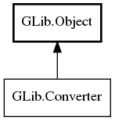

GLib.Converter Reference Manual
Packages
gio-2.0
GLib
Converter
convert
reset
Converter
Object Hierarchy:

Description:
public
interface
Converter
:
Object
All known implementing classes:
CharsetConverter
ZlibCompressor
ZlibDecompressor
Namespace:
GLib
Package:
gio-2.0
Content:
Methods:
public
abstract
ConverterResult
convert
(
uint8
[] inbuf,
uint8
[] outbuf,
ConverterFlags
flags,
out
size_t
bytes_read,
out
size_t
bytes_written)
throws
Error
public
abstract
void
reset
()